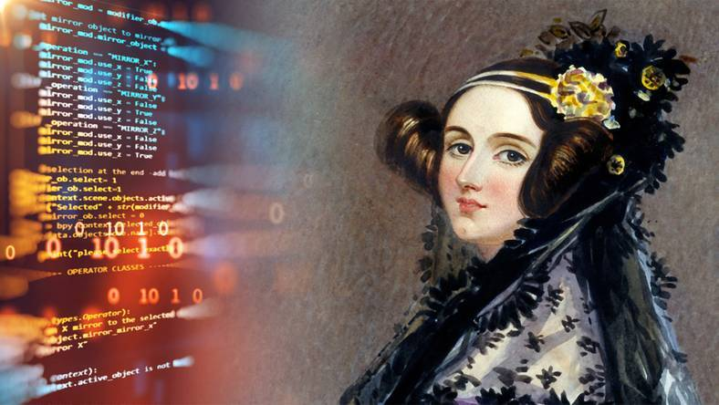
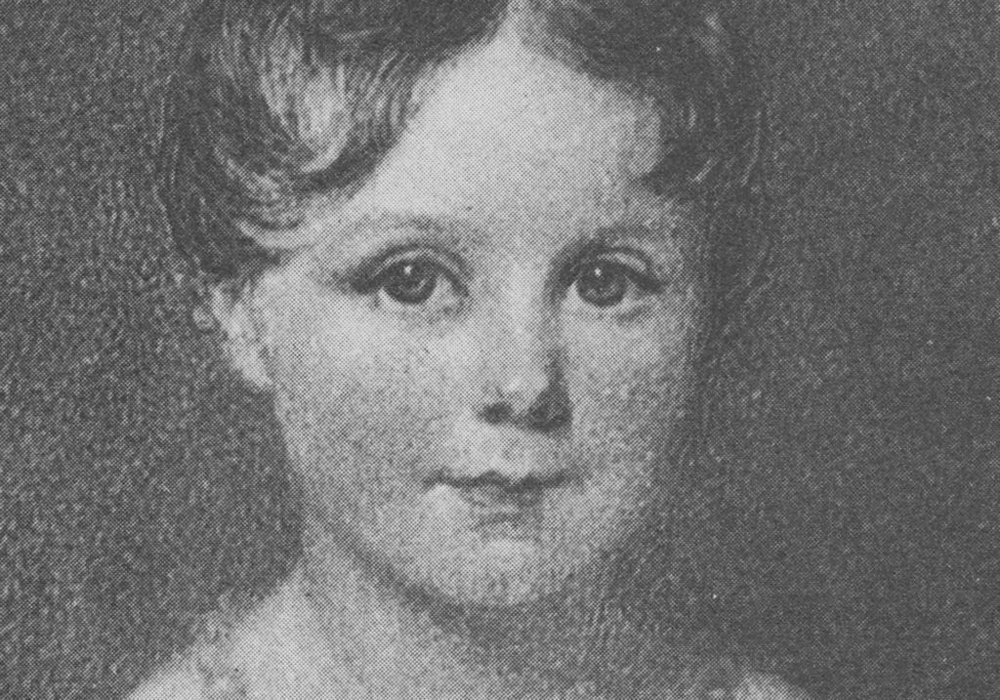
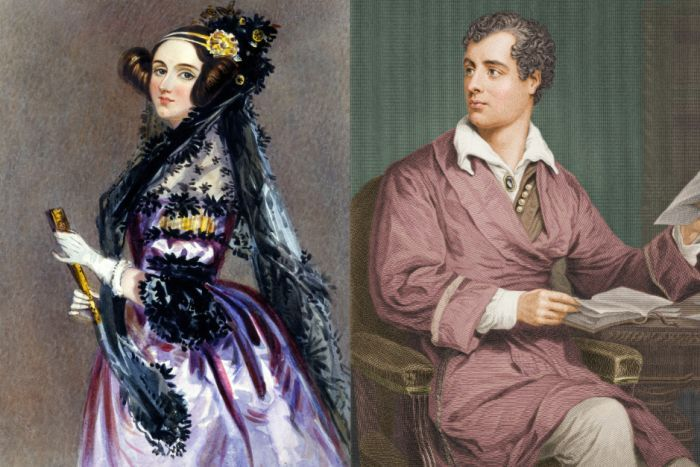
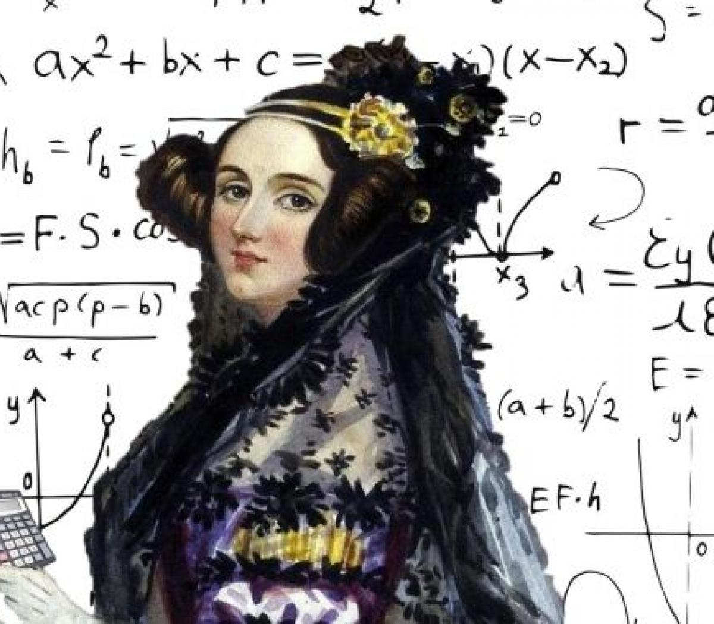

Durante a história da tecnologia, as mulheres se destacaram e fizeram a diferença na área. Até hoje, muitas das descobertas feitas por elas são utilizadas por nós. Uma das grandes personalidades da área foi Ada Lovelace, considerada a primeira programadora da história.
Augusta Ada Byron King, condessa de Lovelace, nasceu em Londres em 1815. Mais conhecida como Ada Lovelace, devido a seu titulo de Condessa de Lovelace, foi uma mulher, mãe, matemática e escritora brilhante. Postumamente conhecida como encantadora de números, mãe dos softwares e criadora do primeiro programa de computadores da história. stória da computação.
Seu pai era o poeta romântico Lord Byron, quando ele recebeu a notícia que seria pai de uma menina, ficou extremamente desapontado — um dos motivos que o levou a se separar de Anne quando Ada tinha apenas dois meses.
A mãe de Ada tentou manter Lord Byron afastado dos pensamentos da filha, e temia que a loucura e os dons poéticos do pai fossem passados para ela. Para evitar que isso acontecesse, a Baronesa manteve a filha ocupada e fazia com ela se dedicasse à música e à matemática, em especial à lógica matemática.
Ainda jovem, aos 17 anos, Ada conhece Mary Sommerville, a qual passou a ser a mentora de Lovelace. Mary era uma estudiosa de matemática e cientista que entrou para a história ao se tornar a primeira mulher a ingressar na Sociedade real de Astronomia. Por causa dessa relação, Ada compareceu em um jantar a convite de Mary, o que fez com que ela conhecesse Charles Babbage. É nesse evento que a sua importante jornada no mundo da programação se inicia.
Charles gostou da jovem, ela era uma das poucas pessoas que se interessou e entendeu suas invenções. Quando Ada conheceu a máquina diferencial, viu nela muitas possibilidades que nem mesmo Charles havia pensado. O entusiasmo da jovem matemática o impressionava.
Charles era viúvo e lutava por investimentos para os seus projetos. Ada se casou e teve 3 filhos. Em 1830, isso significava que ela deveria abandonar os estudos e se dedicar aos filhos. Trocava cartas com Charles, acompanhava o trabalho dele de longe. Tinha pouco tempo para os próprios estudos. Passou a resolver problemas matemáticos à noite, após as crianças dormirem. Ela queria era trabalhar com Charles em suas máquinas incríveis.
Tempos depois, Charles criou o Engenho Analítico, melhor do que a máquina diferencial, pois seria capaz de analisar dados e guardar informações na memória. Algo tão revolucionário que poucas pessoas entenderam. Para divulgar sua nova máquina, precisaria publicar artigos em francês, língua que ele não sabia, mas Ada era fluente. Como ela entendia as criações de Charles, era a pessoa perfeita para traduzir esses artigos.
Enquanto Ada traduzia o conteúdo, fazia anotações por conta própria, imaginava inúmeras possibilidades que a máquina teria. Não tardou para que suas anotações ficassem maiores do que o próprio artigo.
Charles queria que a máquina resolvesse problemas matemáticos. Ada pensava em algo muito maior: os números poderiam representar coisas totalmente diferentes como letras e notas musicais. Escreveu instruções detalhadas com diagramas e tabelas explicando como o engenho analítico deveria processar uma equação matemática complicada. Assim, a máquina resolveria em segundos o que um humano levaria horas para solucionar. Os computadores ainda não existiam, mas Ada tinha acabado de criar o primeiro programa de computador. Ada não viveu para ver que suas ideias se transformariam nos computadores modernos que usamos hoje.
